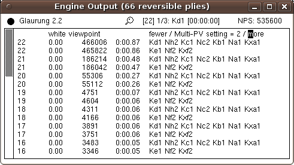
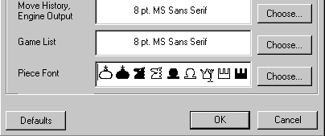
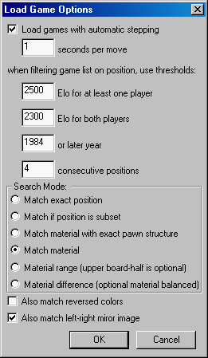
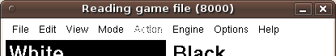
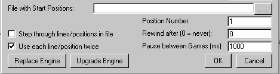
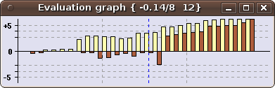
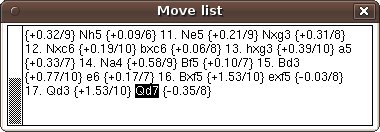
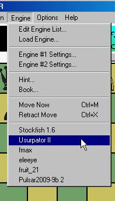
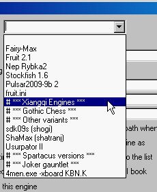
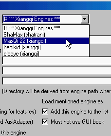

Playing PV moves in analysis mode
When the engine is analyzing (or at any other time it is thinking, like when playing or pondering) you can step through a selected PV it produced by right-clicking it in the Engine Output window, and moving the mouse. But in analysis mode, it is now also possible to add one or more of these PV moves to the game you are analysing.
When you right-click a PV in analysis mode, display of the positions along the PV will not start at the end, (as is normally done), but after the first move. You can step through the PV in the usual way, by moving the mouse with the right button kept down. But when you release that button now, the position that was displayed when you released will become the new position from which the engine will be analyzing. All moves of the PV before that will be added to the stored game, starting from the old position the engine was analyzing.This means a simple static right-click can be used to advance exactly one move along the PV, and continue analysis from there. But by moving the mouse first, you can follow the PV much farther, in one swoop. If it was not your intention to make any of the moves at all, but you just wanted to have a peek at the PV, like right-clicking in other modes would do, you can simply move back to the beginning of the PV before releasing the mouse button.
The Shift key retains its usual meaning for entering moves: If you keep it pressed at the time of the right-click, for a position not at the end of the game, the PV moves will be added as a variation. Otherwise the game will be truncated, before adding the moves.
Quickly adapting the number of printed PVs in analysis modeThe number of PVs printed in multi-PV mode by engines that support the option 'MultiPV' can now be conveniently changed by clicking on the words 'fewer' or 'more' displayed in the Engine-Output window, in Analysis mode. The header line printed above the engine output to make this possible also specifies if scores are displayed from the white or from the side-to-move point of view. This can be controlled by the new command-line option '-absoluteAnalysisScores true|false'. This option has no effect outside Analysis mode. Displaying the fifty-move counterThe number of plies since the last irreversible move (capture or Pawn push) played in engine games is now displayed in the title bar of the Engine Output window, when it gets significantly large. This way you can see more easily if the engines are heading for a 50-move draw, and how long you will still have to endure it. |  |
Null moves in Chess
When analyzing, it is sometimes useful to give the move to the other side as that really has it. For instance, if you want to know if there if the last move poses a hidden threat, you can let that side move again to reveal his plan. In analysis and edit-game mode you can now do such a null move, by clicking the clock of the side you want to give the turn to. (The old fuction of adjusting the clocks has been abolished, because you can do that now in modes where engines play by pressing Shift while clicking on the clock, and EditGame mode does not use the clocks anyway.) Pressing Shift while entering the null move will make this move start a variation, otherwise it will replace the tail of the current line (as usual). A null move will be written as "--" in the PGN file.
|  |
Figurine fonts and piece fontsThe font of the Game List in WinBoard can now be chosen separately from that of Move History and Engine Output, so that it becomes possible to choose a figurine font for the latter. (This would otherwise completely mess up the Game List.) The WinBoard Fonts dialog now also includes the Piece Font, i.e. the font that is used for rendering the pieces on the Chess board, which formerly could only be defined by the command-line option /renderPiecesWithFont. Because there is no standardization in the way Chess fonts map characters on piece symbols, you always have to do this in combination with changing the /fontPieceToCharTable. The dialog offers you this opportunity, by allowing you to edit the sample field in the given font, so that you can sort the piece symbols of the font into canonical order (PNBRQKpnbrqk), so WinBoard knows which character to use for which piece.
|
|
 |
Searching a position in a game fileXBoard now supports the possibility to filter games based on the occurrence of a given position, just as you could already filter on occurrence of a certain text in the game header. To this end there now is a new button in the Game List window, "find position". When this button is pressed, the loaded game file will be searched for the position currently shown in the board display, and only games containing this position will be dispayed in the Game List. (The filter text is also taken into account during such a search.) When you then load a game selected this way, auto-play will be suppressed, and in stead you will be automatically moved to the sought position. Selecting by header text only remains possible through the Filter (WB) / Apply (XB) buttons. Note that searching for a position is a much slower process than searching for a header text, because all the games have to be replayed to compare their positions. For big files with tens of thousands of games, this could take appreciable time. To show progress, messages counting the number of games already processed will be shown in the title bar of the main window. XBoard will try to preprocess the games, and cache them in memory in a compressed (2 byte per move) format, to speed up subsequent searches through them. But if the file is too big, this will not work, and all searches must be conducted from disk.  |
Apart for selecting games by position or by an exact text match in the header line, you can now also select them by numerical comparison on the rating and date tags. Thresholds for rating and year can be set, and only games of higher-rated players or from later years will then be selected. These thresholds can be set from the Load Game menu dialog, as well as through the (volatile) command-line options -eloThresholdAny, -eloThresholdBoth, and -dateThreshold. The way positions are searched can also be set in this dialog. You can search for an exact match, but also for positions that can contain additional material on what are empty squares in the board display, or material composition with or without exact Pawn structure. There also is a mode in which you can search for material within a specified range, where you set up the material that must minimally be present in the lowe board half, and what could be present optionally next to that in the upper half. You can also require that this optional material should be balanced, so that you will only find positions with the same difference in material as what you set up in the lower board half. Position searches can be extended to also find horizontally mirrored or color-reversed positions.
Playing openings with reversed colors
The setting "-loadGameIndex -2" to indicate XBoard should take a new opening line from a game file every two games, in a match or tournament between engines, is now also effective in combination with the GUI book. Provided both engines do use the GUI book, specifying this option (through ticking the checkbox "Use each line/position twice" in the Tournament dialog) will cause the odd games to be extracted randomly from the book, but the following even games then to use exactly the same opening. When you play an even number of games per pairing, this game will be between the same two engines, so they will play it with the colors reversed. This will even work when these two games are played by different XBoard instances working on the same tourney.
Replacing engines during a tournamentThe built-in tournament manager now allows you to replace an engine in a running tournament. To this end two buttons have been added in the Tournament dialog. The way it works is that you first replace the name of the engine you want to replace by the name of the engine you want to replace it with in the Participants list of the Tournament dialog, by editing the latter. After that you can use one of the buttons to perform the substitution. With "Upgrade" the games already played by the replaced engine remain valid, and the new engine will only replace it for future games. With "Replace" all games of the replaced engine will be voided, and be replayed with the new one. You won't even have to stop the tourney to do this, as long as the engine you want to erase the games of is not playing at the moment you try to replace it. |  |
Converting PVs to SAN
Some engines show ugly PVs (in the message field above the board, or in the Engine-Output window), using long-algebraic notation. It is now possible to let XBoard convert PVs to SAN before display, on a per-engine basis, through the options -fSAN and -sSAN. This does put some extra workload on the GUI, though, having to parse each PV to extract the meaning of each move, and then convert it to SAN. You would also lose any remarks the engine writes in between its moves. So do not use it frivolously.
|  |
Zooming in on small scores in the Evaluation GraphThe vertical axis of the Eval Graph always runs from -5 to +5 Pawns, (or -15 to +15 in drop games like Crazyhouse or Shogi), with ticks at 1, 3 and 5. Larger scores are not very interesting, as the game is usually completely decided when they occur (and the graph can overshoot the axis to about +/-7 anyway). But it makes small scores occurring in the beginning of the game hard to see. An additional hindrance was that scores below a certain threshold (0.25 in absolute value) were not drawn at all in the graph, for unclear reasons. |
A new option, "-evalZoom N" with integer N, allows you to blow up the range -1 to 1 by the given factor, to get better view there. Default value is 1, to mimic old behavior, but usually N=3 provides a much nicer view. In XBoard the zoom factor can be set from the General Options menu dialog. A new option "-evalThreshold S" allows you to alter the score threshold below which drawing is suppressed to S centiPawn (default 25 cP). The score/depth of the currently displayed move is now printed numerically in the title bar of the Eval Graph, and no longer in the Comment popup, so you can more easily see them (and won't be bothered by the Comment popup that much anymore).
The point of view of engine scores
Two options have been added to control the point of view of scores. With "-absoluteAnalysisScores true|false" you can control whether scores in the Engine-Output window will be displayed from a white perspective, or from the perspective of the side to move, in Analysis mode. With "-scoreWhite true|false" you can do the same for all modes. These options have only effect on printing of the scores, not on score-based adjudication, sorting order of multi-PV lines, or the Evaluation Graph (which always shows scores from the white perspective).
New-style move-history window for XBoardXBoard now has a Move History window similar to that of WinBoard, which displays the game in free-format PGN style. This means that score-depth info can now be printed in PGN comment style between the moves, through the option "-showEvalInMoveHistory true|false", wich can also be set from the General Options dialog. Of course clicking on the moves will still bring up the corresponding position on the board, as usual. Apart from being a step in the XBoard -> WinBoard convergence, this "landscape" style Move History is preferred over the old "portrait" format, for more natural tiling of the various widows. |  |
Annotating a game with analysis results
The item "Analyze File" in the Mode menu has been replaced by an item "Analyze Game". The original function of "Analyze File" loading a game file and starting analysis on it, had already been altered since XBoard 4.5.0. It was not really useful, as it did the same as what could also be done by first loading a game, and then switching to Analysis Mode. In stead it was made to save the analysis results as comments to the moves, during the automatic stepping through the loaded game.
But it was quite illogical to have an item in the Mode menu that would open a file; such items belong in the File menu. And being only able to do such annotation on games from files was not very flexible. The menu item that now replaces it, "Analyze Game", performs the same kind of annotation, (with engine score/depth and PV), but now on the game that is already stored, starting from the currently shown position. As you can stop the auto-stepping at any time, by switching to another mode, this means you can now limit the annotation to any selected part of the game, starting where it gets interesting.
|  |
Quickly loading recently used enginesWinBoard now keeps track of which engines are used (as first engine at startup, or through the Load Engine dialog). This information is stored in the settings file as the string option -recentEngineList, and next time you start WinBoard, this list will be displayed at the bottom of the Engine menu. When you select one of these items, the corresponding engine will be loaded as first engine, exactly like you went to Load Engine, selected it from the combobox, and pressed OK. By default WinBoard would show the 6 most-recently used engines in the menu, in order of least-recent use. This number can be changed with the aid of the presistent option -recentEngines. Another interpretation of Asia rulesFor perpetual-chase detection in Xiangqi XBoard had been relying on the legal-moves-only interpretation of Asia rules, where attacks or protectors are considered not to exist when you are in check, because you cannot legally capture or recapture in that case. It turns out this interpretation is not the one most commonly used. So we have switched to an interpretation where one does consider captures that leave the King in an already existing check, or recaptures that leave the King in a check that already existed before the capture (provided these are the only checks it is left in). |
Structuring the list of installed enginesThe engine list (-firstChessProgramNames, for those used to editing the ini file) upto now has always been a large, unstructured pool of engines. From now on it is possible to group the engines, by including "# GROUPNAME" and "# end" tags amongst the engine lines. These tags delimit a group of engines, and the GROUPNAME could be any text you like. (The only important thing is that it starts with a # sign.) Engines belonging to such a group will normally not be displayed in the comboboxes for selecting engines in the Load Engine and Tournament Options dialogs. In stead they will be 'collapsed' to their group tag. (End tags will always be invisible.) A group can be 'opened' by selecting the group tag from the combobox. This does not really select anything (e.g. no engine will be added to the tourney participants when you do this). So you have to make a selection from the combobox again, but now you will see the contents of the group there, and nothing else! The group will remain selected, so you can select multiple engines from it, until you close the dialog, or select the group header (first item). In the latter case you revert back to 'top-level view' of the combo-box, as when you first entered the dialog. This grouping can be applied recursively. I.e., you can make groups within groups. |  |  |
The PGN Number tagA (persistent) Boolean option -pgnNumberTag has been added to enablee writing a Number tag in PGN files saved during a tourney, containing the (unique) sequence number of the game within that tourney. This number corresponds to the one used in the debug file name, so the correct debug file for the game can be easily found. |
A separate debug file for every tourney gameXBoard and WinBoard normally use one debug file for an entire session. But now it is possible to let them create a separate debug file for each game in a tournament. All you have to do is request a -debugfile name that contains %d in it. XBoard will then replace this %d by the sequence number of the game, and continue using that new file to write the debug information on. E.g. using -debugfile "debugs/game%d.txt" will create files game1.txt, game2.txt etc. in the directory 'debugs' (which must pre-exist!). |